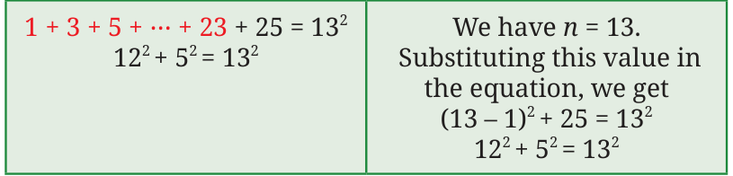

In his Śulba-Sūtra (Verse 1.13) Baudhāyana lists a number of integer triples (a, b, c) that form the sidelengths of a right-triangle and therefore
satisfy \(a + b = c\) . These include (3, 4, 5), (5, 12, 13) (8, 15, 17), (7, 24, 25), (12, 35, 37), and (15, 36, 39). For this reason, such triples (a, b, c) that form the sidelengths of a
right triangle (equivalently, satisfy \(a + b = c\) ) are called Baudhāyana triples. They are also called Baudhāyana-Pythagoras triples, Pythagorean triples, and right-angled triangle triples. List down all the Baudhāyana triples with numbers less than or equal to 20.
Is there an unending sequence of Baudhāyana triples? Mathematicians have answered this question and have found a method to generate all such triples! Let us take a few steps in this direction. We have seen that (3, 4, 5) is a Baudhāyana triple. Is (30, 40, 50) a Baudhāyana triple?
Is (300, 400, 500) a Baudhāyana triple? The list of Baudhāyana triples having numbers less than or equal to 20 contains the following triples -
(3, 4, 5), (6, 8, 10), (9, 12, 15), (12, 16, 20).
Do you see any pattern among them? All these triples can be obtained by multiplying each term of (3, 4, 5) by a certain positive integer.
Can we form a conjecture on Baudhāyana triples based on this observation?
Conjecture: (3k, 4k, 5k) is a Baudhāyana triple, where k is any positive integer.
Is this true?
We have to check if \((3k) + (4k) = (5k)\) .
We have \((3k) + (4k) = 9k + 16k = 25k\) , which is equal to (5k) . So, (3k, 4k, 5k) is indeed a Baudhāyana triple. This shows that there are infinitely many Baudhāyana triples. Can we further generalise the conjecture?
triple where k is any positive integer. Is this statement true? This statement can be shown to be true in the same way. Since (a, b,
- c)is a Baudhāyana triple, we have \(a + b = c\) . We need to check whether
(ka) + (kb) = (kc) .
(ka) = ka \(\times\) ka \(= k a\) , and (kb) = kb \(\times\) kb \(= k b\) .
So, (ka) + (kb) \(= k a + k b\) .
Taking out the common factor, we have
(ka) \(+(kb) = k\) (a \(+ b\) ).
Since \(a + b = c\) , we have
(ka) + (kb) \(= k c =\) (kc) .
Thus, (ka, kb, kc) is a Baudhāyana triple if (a, b, c) is a Baudhāyana triple. We call (ka, kb, kc) a scaled version of (a, b, c). A Baudhāyana triple that does not have any common factor greater than 1 is called a primitive Baudhāyana triple. So, (3, 4, 5) is primitive, whereas (9,12,15) is not.
Is (5, 12, 13) a primitive Baudhāyana triple? What are the other primitive Baudhāyana triples with numbers less than or equal to 20?
Generate 5 scaled versions of each of these primitive triples. Are these scaled versions primitive?
If (a, b, c) is non-primitive, and the integers have \(f -\) greater than \(1 -\) as a common factor, then is ( \(\frac{a}{f}\) , \(\frac{b}{f}\) , \(\frac{c}{f}\) ) a Baudhāyana triple? Check this statement for (9, 12, 15). Justify this statement. If we can find all the primitive triples, we can find all the Baudhāyana triples.
How do we generate more primitive triples? We know the relation between the sum of consecutive odd numbers and square numbers.
\(1 = 1\)
\(1 + 3 = 2\)
\(1 + 3 + 5 = 3\)
The sum of the first n odd numbers is n . Let us express this algebraically. For this, we need to know the nth odd number. What is it? The nth odd number is \(2n - 1\). So,
\(1 + 3 + 5 +\) … \(+ (2n - 3) + (2n - 1) = n^{2}\)
Sum of first (n \(- 1)\) odd numbers
Thus,
(n \(- 1) + (2n - 1) = n\) .
Note that this equation could also have been directly obtained by
expanding (n \(- 1)\) and adding \(2n - 1\) to it. If the nth odd number, \(2n - 1\), is also a square number, then we have a sum of two square numbers equal to another square number. We will use this idea to generate Baudhāyana triples.
- 1.9 is an odd square. It is the 5th odd number \((9 = 2 \times 5 - 1)\). So, we have
\(1 + 3 + 5 + 7 + 9 = 5\)
\(4 + 3 = 5\)
Could we have obtained this triple using the equation (n \(- 1) + (2n - 1) = n\) ? Since we took the 5th odd number, the value of n is 5. Substituting \(n = 5\) into the equation, we get
\((5 - 1) + 9 = 5\)
\(4 + 3 = 5\) .
- 2.25 is an odd square. It is the 13th odd number \((25 = 2 \times 13 - 1)\). So,
